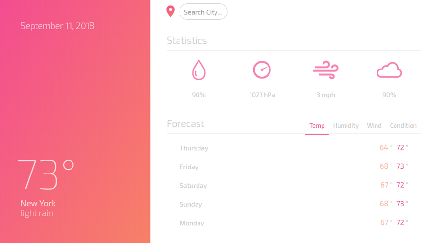

Development Portfolio
Beloved Transportation
Android application that helps non-profit organization with their transportation service. Uses scheduling, GPS navigation, client information to give drivers everything they need while on the road.

Weather+
React JS web application that uses component driven code and API fetching to give users full information about the weather and forecast. Uses GeoLocation to have location based results.
Nutrition X
In Progress: A nutrition tracker that uses the USDA nutrition API for its food database. Can track meals throughout the day, add foods, keep track of calories, nutrition, macros, and targets.
Places
React JS web application that gives information about countries around the world. With enhanced API, can be used as a travel client for users looking for a place to visit.